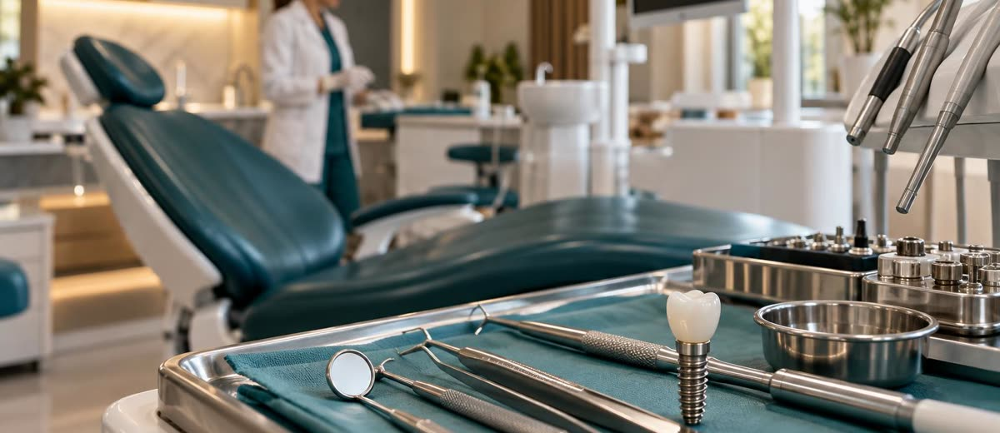

Sabes qué haces cada día. ¿Sabes qué te deja dinero?

La agenda llena da una sensación que puede engañarte.
Hay movimiento. Hay sillón ocupado. Hay citas que entran y citas que salen. Y al final del mes los números no cuadran igual que esa sensación.
El problema no es que trabajes poco. Es que no todos los procedimientos pagan igual. Y si no sabes cuáles son los que financian tus costes fijos, estás trabajando sin ese dato.
El dato que muy pocas clínicas tienen claro
Un implante genera en valor absoluto más de 25 veces más margen que una higiene o una conservadora básica. En porcentaje también gana el implante: 59% frente al 43% que deja la higiene.
Eso no significa que tengas que dejar de hacer higiene. Significa que si tu agenda está llena de higiene y revisiones pero el sillón de implantes tiene huecos, tu clínica trabaja mucho para ganar poco.
Las cadenas no empujan los implantes por capricho. Lo hacen porque tienen el dato. Saben exactamente qué procedimiento financia la central de compras, el marketing y los cientos de profesionales que contratan cada año.
La clínica independiente tiene el mismo sillón. Lo que le falta, a veces, es esa hoja de cálculo.
La sensación de actividad no es rentabilidad
Hay clínicas con la sala de espera llena que no llegan a final de mes. Y hay clínicas más tranquilas, con menos movimiento aparente, que cierran el año bien.
La diferencia casi siempre está en qué se hace, no en cuánto.
Una clínica con facturación media de 500.000 euros al año puede acabar con un margen de beneficio del 8% o del 18%. La horquilla es enorme. Y lo que decide en qué extremo acabas no es cuántos pacientes entran: es qué hacen cuando están dentro y cómo gestionas lo que dejan.
El overhead medio de una clínica dental española ronda el 62-65% de lo facturado. Las clínicas de alto rendimiento lo mantienen por debajo del 60%. Esa diferencia de 7 a 10 puntos, sobre 500.000 euros de facturación, son entre 35.000 y 50.000 euros de beneficio adicional al año. Sin captar un solo paciente nuevo.
El paciente que dice sí a un implante no entra por casualidad
El problema no es solo saber qué procedimiento deja más margen. Es tener el sistema para que ese procedimiento se cierre.
El paciente de higiene entra con facilidad. Es rutina, es barato, no hay que convencer mucho.
El de implante o tratamiento complejo llega con más preguntas, más dudas, más tiempo hasta decidir. Si tu recepción no está entrenada para acompañar ese proceso, si el presupuesto se entrega y no se hace seguimiento, si la primera visita termina sin un plan claro, el margen se va.
No por falta de pacientes. Por falta de sistema.
El trabajo de una clínica no es llenarse de citas. Es llenarse de las citas correctas, con el sistema para no perderlas.
Lo que esto significa para tu gestión
Primero, míralo por dentro.
- Separa la facturación por procedimiento. ¿Cuánto viene de implantes? ¿De ortodoncia? ¿De conservadora y revisiones? Si no lo tienes, un mes de datos ya te da el mapa.
- Calcula el margen neto de cada servicio, no el precio de venta: el coste de materiales, el tiempo de sillón, la parte proporcional de overhead. Lo que queda es lo que importa.
- Cruza ese dato con la ocupación real. Si los tratamientos de mayor margen tienen baja ocupación, el problema casi nunca es de demanda: es de cómo se presentan, cómo se cierran y cómo se hace seguimiento.
Lo que miran los que compran clínicas
Cuando un fondo de inversión o un grupo dental valora una clínica para comprarla, lo primero que revisa no es la clientela ni el equipamiento. Es el mix de procedimientos y el margen por tipo de tratamiento.
Una clínica donde el 80% de la facturación viene de conservadora e higiene vale menos que una donde los tratamientos de alto valor tienen presencia real. No porque los primeros sean malos, sino porque el segundo perfil demuestra que hay un sistema de gestión detrás.
El Método EBA trabaja exactamente este punto con las clínicas que acompaña: antes de hablar de marketing o de captación, ordenar lo de dentro. Saber qué procedimiento financia qué. Y construir el sistema para que los tratamientos de mayor valor no se queden a medias entre la primera visita y el cierre.
Las cadenas lo hacen con un manual y una central de datos. La independiente puede hacer lo mismo con una hoja de cálculo y la decisión de mirar sus propios números de frente.
(Fuente: EUSTAK / análisis Spaziodentista 2026 sobre finanzas de clínicas dentales)